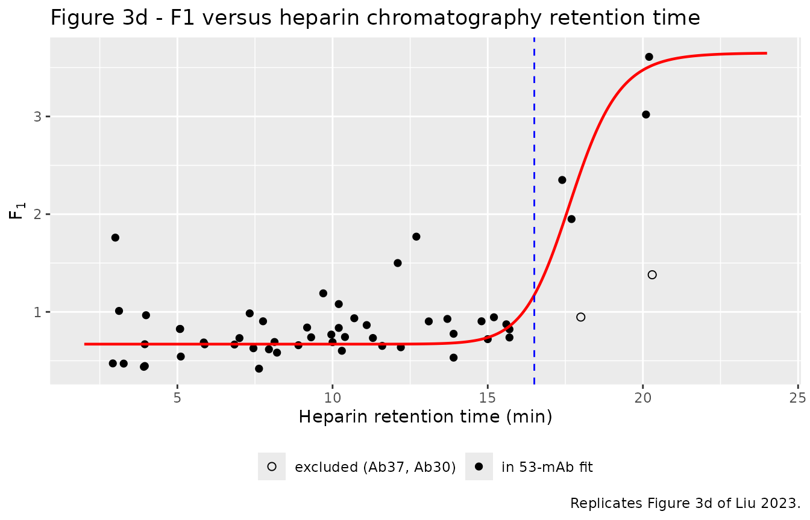
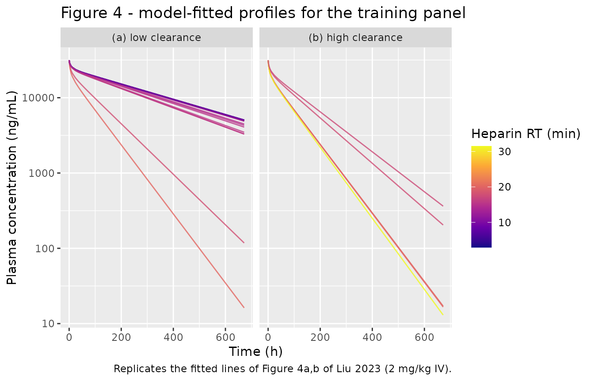
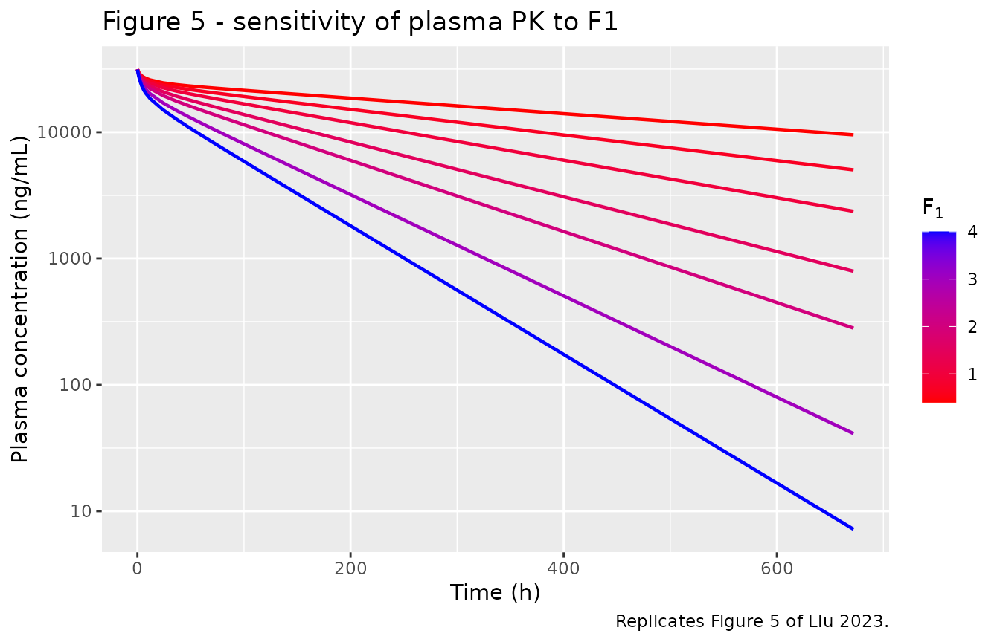
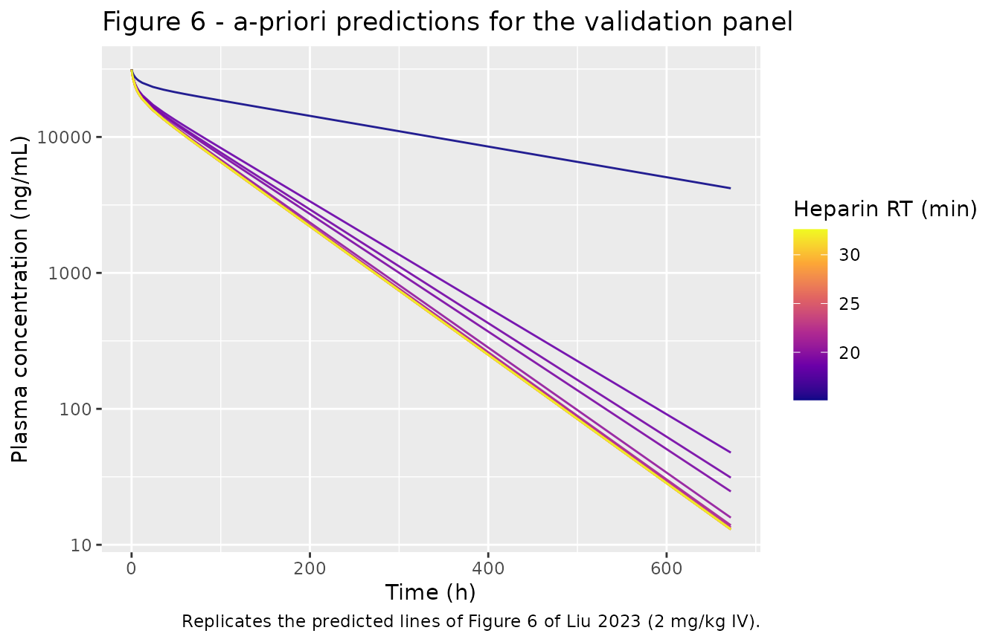
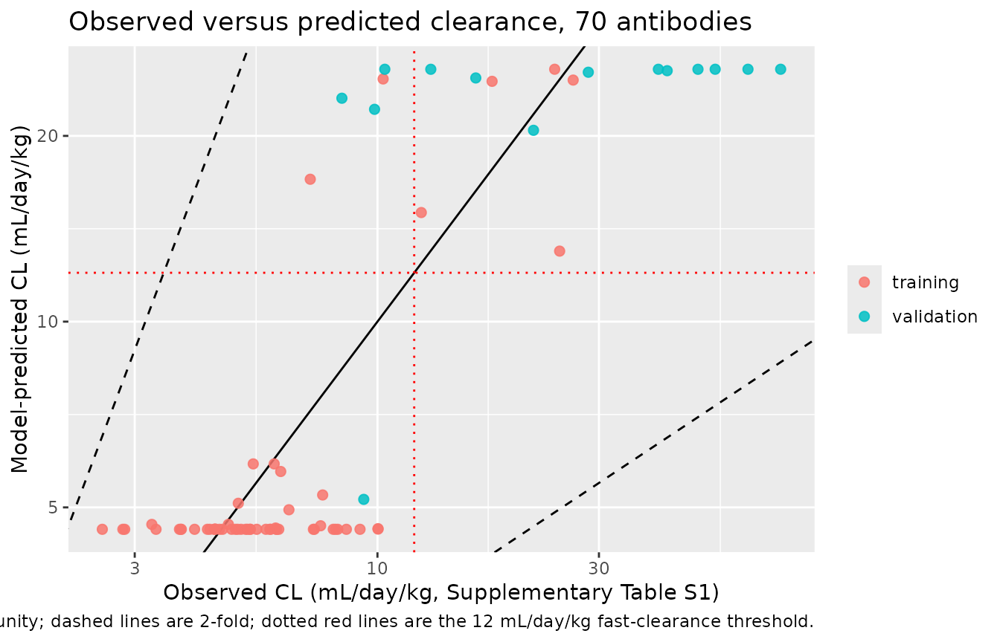

Inter-antibody variability in mouse monoclonal antibody PK (Liu 2023)
Source:vignettes/articles/Liu_2023_mAb_mouse_pbpk.Rmd
Liu_2023_mAb_mouse_pbpk.RmdModel and source
Citation: Liu S, Humphreys SC, Cook KD, Conner KP, Correia AR, Jacobitz AW, Yang M, Primack R, Soto M, Padaki R, Lubomirski M, Smith R, Mock M, Thomas VA. Utility of physiologically based pharmacokinetic modeling to predict inter-antibody variability in monoclonal antibody pharmacokinetics in mice. MAbs. 2023;15(1):2263926. doi:10.1080/19420862.2023.2263926
Description: PBPK (whole-body, 15-tissue Shah & Betts 2012 platform). Preclinical (mouse, female BALB/c, 28 g). Inter-antibody variability in monoclonal antibody plasma PK, with the antibody-specific pinocytosis-uptake coefficient F1 driven by a sigmoidal function of the antibody’s heparin-chromatography retention time (HEPARIN_RT) and the convective-transport coefficient F2 fixed at the panel median. Fitted simultaneously to IV plasma profiles of 53 aglycosylated human IgG1z SEFL2.2 antibodies dosed at 2 mg/kg.
Supplement (Supplementary Methods 1-3, Supplementary Tables S1-S3, Supplementary Figures S1-S2): https://doi.org/10.1080/19420862.2023.2263926
Upstream platform model: Shah DK, Betts AM. J Pharmacokinet Pharmacodyn. 2012;39(1):67-86, https://doi.org/10.1007/s10928-011-9232-2 (also packaged as
Shah_2012_mAb_PBPK)
Population
Liu 2023 produced 83 antibodies on a single invariant scaffold - an aglycosylated human IgG1z stable-effector-functionless (SEFL) 2.2 isotype of the G1m17 allotype, carrying an N297G mutation to remove Fc-gamma-receptor binding plus R292C/V302C to install a thermostabilising disulfide. The 83 Fv domains were chosen to span a broad range of physicochemical behaviour across 33 different target antigens, without regard to target biology. Nineteen antibodies with mouse cross-reactivity (potential target-mediated disposition) and eight with observed immunogenicity were removed, leaving 56 antibodies with clean linear mouse PK.
Each antibody was dosed at 2 mg/kg IV bolus via the
lateral tail vein into female BALB/c mice aged 6-8 weeks, using a
cassette strategy of up to five antibodies per animal (combined antibody
load 10 mg/kg; n = 3 animals per time point, mean profiles
used for modelling). Serum was assayed by multiplex
electrochemiluminescent immunoassay. Across the 56-antibody panel,
AUC(0-672 h) spanned roughly eightfold (1.74e6 to 1.38e7 ng*h/mL) and
clearance about tenfold (2.55 to 26.4 mL/day/kg); only six antibodies
exceeded the in-house 12 mL/day/kg fast-clearance threshold.
A separate panel of 14 monospecific antibodies (Ab85-Ab98), constructed in the same SEFL2.2 format from bispecifics known to have poor PK, was run as an a-priori validation set and deliberately enriched for fast clearance.
The same information is available programmatically via
readModelDb("Liu_2023_mAb_mouse_pbpk")()$population.
Model structure
The model is the Shah & Betts 2012 platform PBPK model: 15
tissues (heart, lung, muscle, skin, adipose, bone, brain, kidney, liver,
small intestine, large intestine, pancreas, thymus, spleen, “other”)
connected by plasma and lymph flow, each divided into a vascular, an
endosomal and an interstitial space, plus a central plasma pool and a
lymph node. Antibody enters the interstitium by convection through the
L * (1 - sigma_V) paracellular route and enters the
endothelial endosome by fluid-phase pinocytosis CLup. In
the endosome it binds FcRn (Kon/Koff); bound
complex recycles to the vascular space (fraction
FR = 0.715) or to the interstitium (1 - FR),
and FcRn-unbound antibody is degraded at Kdeg. Because none
of the antibodies bind a mouse antigen, no target-mediated term is
present. This gives 77 ODE states in the packaged model (15 tissues x 5
states, plus plasma and lymph node).
Liu 2023 layered the Chen & Balthasar inter-antibody variability
formalism onto that platform: a coefficient F1 multiplies
the pinocytotic uptake CLup, and a coefficient
F2 multiplies organ lymphatic flow. F1 and
F2 were first estimated for each of the 56 antibodies
individually. Only F1 clustered against the in-vitro assay
panel - specifically against heparin-chromatography retention time - so
the final model expresses F1 as a sigmoidal function of
HEPARIN_RT and fixes F2 at the panel
median:
with a = 0.67, b = 3.65, c =
17.7 min and d = 22.7 estimated by simultaneously fitting
the 53 retained training antibodies (Table 2), and F2 =
1.45.
Source trace
Per-parameter provenance is also recorded as an in-file comment
beside every ini() entry in
inst/modeldb/pharmacokinetics/Liu_2023_mAb_mouse_pbpk.R.
| Equation / parameter | Value | Source location |
|---|---|---|
F1 sigmoid form |
a + (b - a) / (1 + (c / HEPARIN_RT)^d) |
Liu 2023 Eq 1 (Results, “Fitting of the PBPK model incorporating the Heparin_RT covariate”) and Eq 2 (Materials and methods, “Simultaneous fitting of antibody PK using full PBPK model”); repeated in Supplementary Methods 2, “Equations for Organ Sub-Compartment” |
lclup_scale_min (a) |
0.67 (CV% 1.28) | Liu 2023 Table 2 |
lclup_scale_max (b) |
3.65 (CV% 3.37) | Liu 2023 Table 2 |
lrt50_clup_scale (c) |
17.7 min (CV% 0.543) | Liu 2023 Table 2 |
lhill_clup_scale (d) |
22.7 (CV% 7.89) | Liu 2023 Table 2 |
llymph_scale (F2) |
1.45, fixed | Liu 2023 Results: “we fixed F2 to 1.45, the median F2 value in this panel” |
lclup (CLup) |
0.24 L/h/L, fixed | Liu 2023 Materials and methods, “Individual fitting of antibody PK using the base PBPK model”: “the parameter glossary and values are the same as in Shah and Betts except that the CLup value is set to 0.24 L/h/L” |
lfcrn (FcRn) |
4.98e-5 mol/L, fixed | Shah & Betts 2012 Table 6 (inherited unchanged; Liu 2023 reference 36) |
lkdeg (Kdeg) |
42.9 1/h, fixed | Shah & Betts 2012 Table 6 |
lclnlf (C_LNLF) |
9.1, fixed | Shah & Betts 2012 Table 6 |
lkon (Kon,FcRn) |
8.06e7 1/M/h (mouse), fixed | Shah & Betts 2012 text p.73, mouse value |
lkoff (Koff,FcRn) |
6.55 1/h (mouse), fixed | Shah & Betts 2012 text p.73, mouse value |
FR = 0.715, sigma_IS = 0.2 |
constants in model()
|
Shah & Betts 2012 text p.73 |
sigma_V per tissue (0.85 / 0.90 / 0.95 / 0.99) |
constants in model()
|
Shah & Betts 2012 text p.73 (assigned by capillary pore size) |
| Mouse organ volumes and plasma flows | see model()
|
Shah & Betts 2012 Table 1, “Physiological model parameters used for mouse (28 g male)” |
Lymph flow L_ORG = 0.002 * PLQ_ORG
|
ratio | Liu 2023 Supplementary Methods 2, “Lymph Flows” (equivalently Shah & Betts 2012: lymph flow 500-fold lower than plasma flow) |
L_LYMPH = C_LNLF * PLQ_LUNG |
flow | Liu 2023 Supplementary Methods 2, “Lymph Flows” |
| Plasma / lymph-node / vascular / endosomal / interstitial ODEs | n/a | Liu 2023 Supplementary Methods 2, “Essential differential equations” |
HEPARIN_RT per antibody |
2.92-32.6 min | Liu 2023 Supplementary Table S1 |
| Observed AUC, half-life, clearance per antibody | see cohort chunk | Liu 2023 Supplementary Table S1 |
Individually estimated F1 per antibody |
see cohort chunk | Liu 2023 Supplementary Table S2 |
| Validation-set %PE and fast-clearance classification | see validation chunk | Liu 2023 Supplementary Table S3 |
Virtual cohort
There is no between-subject random-effect layer in this model:
inter-antibody variability is carried entirely by
HEPARIN_RT. The “cohort” is therefore the antibody panel
itself - one deterministic mouse per antibody, 70 in total (56 training
+ 14 validation), well inside the 200-per-arm cap.
HEPARIN_RT, the observed AUC(0-672 h), half-life and
clearance, and the individually estimated F1 are
transcribed from Liu 2023 Supplementary Tables S1 and S2; the
validation-set %PE from Supplementary Table S3.
ab_panel <- tibble::tibble(
ab = c("Ab1", "Ab2", "Ab3", "Ab4", "Ab6", "Ab7", "Ab10", "Ab12", "Ab13", "Ab14",
"Ab16", "Ab17", "Ab18", "Ab20", "Ab21", "Ab22", "Ab23", "Ab25", "Ab28", "Ab29",
"Ab30", "Ab32", "Ab33", "Ab34", "Ab35", "Ab36", "Ab37", "Ab39", "Ab44", "Ab45",
"Ab46", "Ab47", "Ab50", "Ab51", "Ab52", "Ab54", "Ab56", "Ab57", "Ab58", "Ab59",
"Ab61", "Ab62", "Ab63", "Ab64", "Ab65", "Ab66", "Ab69", "Ab70", "Ab73", "Ab74",
"Ab75", "Ab76", "Ab77", "Ab78", "Ab80", "Ab84",
"Ab85", "Ab86", "Ab87", "Ab88", "Ab89", "Ab90", "Ab91", "Ab92", "Ab93", "Ab94",
"Ab95", "Ab96", "Ab97", "Ab98"),
panel_set = c(rep("training", 56), rep("validation", 14)),
# Supplementary Table S1, column Heparin_RT (min)
HEPARIN_RT = c(11.1, 9.18, 3.99, 6.84, 10.2, 5.85, 9.31, 5.09, 7.76, 20.2,
9.7, 9.96, 5.88, 3.92, 7, 5.08, 8.9, 10.2, 15.2, 8.13,
18, 7.33, 10, 3.95, 7.95, 20.1, 20.3, 17.7, 2.92, 3,
3.27, 13.7, 15.7, 12.1, 14.8, 3.12, 10.4, 8.21, 13.9, 11.6,
7.45, 10.7, 12.7, 13.9, 5.11, 11.3, 12.2, 7.63, 13.1, 15.6,
15.7, 31.5, 3.95, 10.3, 15, 17.4,
20.4, 18.6, 28.3, 21.4, 19.0, 19.3, 27.0, 22.1, 26.0, 30.7,
29.6, 26.0, 15.1, 32.6),
# Supplementary Table S1, column AUC (ng*h/mL)
auc_obs = c(7.97e6, 7.33e6, 5.29e6, 9.78e6, 7.89e6, 7.17e6, 8.41e6, 6.96e6, 7.67e6, 1.82e6,
5.02e6, 8.26e6, 9.70e6, 1.38e7, 8.64e6, 8.95e6, 1.00e7, 5.50e6, 5.72e6, 8.62e6,
6.13e6, 5.37e6, 8.97e6, 6.36e6, 9.64e6, 2.72e6, 4.52e6, 3.85e6, 1.01e7, 5.57e6,
1.19e7, 5.64e6, 7.11e6, 4.73e6, 7.03e6, 6.29e6, 8.29e6, 1.01e7, 1.35e7, 8.90e6,
1.00e7, 6.03e6, 3.98e6, 9.81e6, 1.06e7, 8.09e6, 8.81e6, 1.22e7, 7.51e6, 6.90e6,
7.75e6, 1.74e6, 1.18e7, 8.36e6, 8.40e6, 1.91e6,
2.89e6, 2.20e6, 4.41e6, 1.68e6, 4.49e6, 5.13e6, 1.19e6, 1.14e6, 9.78e5, 8.97e5,
7.64e5, 3.55e6, 4.31e6, 6.50e5),
# Supplementary Table S1, column Half life (h)
thalf_obs = c(129, 171, 197, 180, 147, 280, 249, 307, 127, 54.0,
155, 195, 262, 391, 180, 116, 188, 222, 195, 176,
191, 182, 187, 293, 215, 38.8, 165, 59.9, 386, 63.8,
142, 215, 224, 119, 158, 154, 198, 321, 182, 284,
298, 179, 179, 135, 244, 196, 297, 337, 163, 253,
233, 219, 393, 271, 231, 121,
117, 75.2, 150, 48.9, 174, 213, 46.4, 53.6, 65.1, 69.7,
33.4, 142, 265, 50.9),
# Supplementary Table S1, column Clearance (mL/h)
cl_obs = c(0.00687, 0.00707, 0.00947, 0.00533, 0.00671, 0.00641, 0.00577, 0.00684, 0.00707, 0.0308,
0.0107, 0.00621, 0.00502, 0.00298, 0.00593, 0.00607, 0.00519, 0.00937, 0.00889, 0.00583,
0.00836, 0.00958, 0.00566, 0.00715, 0.00508, 0.0206, 0.012, 0.0145, 0.00389, 0.01,
0.00437, 0.0088, 0.00699, 0.0117, 0.00752, 0.00849, 0.00612, 0.00441, 0.00381, 0.00521,
0.00471, 0.00853, 0.0117, 0.00557, 0.0044, 0.0062, 0.00522, 0.00333, 0.00704, 0.00722,
0.0063, 0.0281, 0.0033, 0.00541, 0.00585, 0.0288,
0.0190, 0.0253, 0.0121, 0.0332, 0.0115, 0.00978, 0.0470, 0.0491, 0.0572, 0.0623,
0.0733, 0.0152, 0.0109, 0.0862),
# Supplementary Table S2, individually estimated F1 (training set only)
f1_indiv = c(0.865, 0.84, 0.966, 0.666, 0.836, 0.687, 0.74, 0.826, 0.904, 3.61,
1.19, 0.768, 0.668, 0.438, 0.732, 0.825, 0.659, 1.08, 0.945, 0.692,
0.947, 0.985, 0.69, 0.669, 0.617, 3.02, 1.38, 1.95, 0.473, 1.76,
0.471, 0.928, 0.822, 1.5, 0.904, 1.01, 0.743, 0.583, 0.532, 0.652,
0.628, 0.935, 1.77, 0.776, 0.543, 0.733, 0.638, 0.419, 0.903, 0.873,
0.738, 1.53, 0.446, 0.602, 0.721, 2.35,
rep(NA_real_, 14)),
# Supplementary Table S3, %PE on AUC (validation set only)
pe_published = c(rep(NA_real_, 56),
-30.1, -3.7, -54.2, 19.8, -54.1, -60.3, 69.5, 77.2, 106, 125,
164, -43.1, 107, 211)
) |>
dplyr::mutate(
id = dplyr::row_number(),
# Liu 2023 excluded Ab76 (atypical profile) and the two nonspecific-binding
# false positives Ab37 and Ab30 from the 53-antibody covariate fit.
fitted = panel_set == "training" & !ab %in% c("Ab76", "Ab37", "Ab30")
)
# Study constants. Body weight is the Shah & Betts 2012 mouse parameter set the
# model is built on (28 g); it reproduces Supplementary Table S1's clearances,
# e.g. Ab1 dose / AUC = 5.6e4 ng / 7.97e6 ng*h/mL = 0.0070 mL/h vs 0.00687 reported.
bw_kg <- 0.028
dose_mg_kg <- 2
mw_g_per_mol <- 150000 # nominal aglycosylated human IgG1; see Assumptions
dose_nmol <- dose_mg_kg * bw_kg * 1e-3 / mw_g_per_mol * 1e9
# Fast-clearance threshold used throughout Liu 2023: 12 mL/day/kg.
cl_threshold_mL_h <- 12 * bw_kg / 24
sample_times <- sort(unique(c(
0, 0.0833, 0.25, 0.5, 1, 2, 4, 6, 8, 12,
seq(24, 168, by = 12), seq(192, 672, by = 24)
)))
events <- rxode2::et(amt = dose_nmol, cmt = "plasma", id = ab_panel$id) |>
rxode2::et(sample_times, id = ab_panel$id) |>
as.data.frame() |>
dplyr::left_join(
ab_panel |> dplyr::select(id, ab, panel_set, HEPARIN_RT, cl_obs, fitted),
by = "id"
)
stopifnot(!anyDuplicated(unique(events[, c("id", "time", "evid")])))Simulation
sim <- rxode2::rxSolve(
mod_fun,
events = events,
keep = c("ab", "panel_set", "HEPARIN_RT", "cl_obs", "fitted"),
atol = 1e-10, rtol = 1e-8
) |>
as.data.frame()
#> Warning: multi-subject simulation without without 'omega'
stopifnot(dplyr::n_distinct(sim$id) == nrow(ab_panel), !anyNA(sim$Cc))Replicate published figures
Figure 3d - sigmoidal relationship between F1 and
heparin retention time
# Replicates Figure 3d of Liu 2023: individually estimated F1 (points) against
# Heparin_RT, with the fitted sigmoid (red) and the 16.5 min flag threshold
# (blue dashed). Ab37 and Ab30 (open circles in the paper) were excluded from
# the fit; Ab76 (Heparin_RT 31.5 min) is off-scale in the paper's panel.
f1_curve <- tibble::tibble(HEPARIN_RT = seq(2, 24, length.out = 400)) |>
dplyr::mutate(F1 = 0.67 + (3.65 - 0.67) / (1 + (17.7 / HEPARIN_RT)^22.7))
ab_panel |>
dplyr::filter(panel_set == "training", !is.na(f1_indiv), ab != "Ab76") |>
ggplot(aes(HEPARIN_RT, f1_indiv)) +
geom_point(aes(shape = fitted), size = 2) +
scale_shape_manual(values = c(`TRUE` = 16, `FALSE` = 1),
labels = c(`TRUE` = "in 53-mAb fit", `FALSE` = "excluded (Ab37, Ab30)"),
name = NULL) +
geom_line(data = f1_curve, aes(HEPARIN_RT, F1), colour = "red", linewidth = 0.8) +
geom_vline(xintercept = 16.5, colour = "blue", linetype = "dashed") +
labs(x = "Heparin retention time (min)", y = expression(F[1]),
title = "Figure 3d - F1 versus heparin chromatography retention time",
caption = "Replicates Figure 3d of Liu 2023.") +
theme(legend.position = "bottom")
Figure 4 - training-set profiles, low- and high-clearance panels
The paper splits Figure 4 into the low-clearance (4a) and high-clearance (4b) antibodies at the 12 mL/day/kg threshold. Observed points are not available in machine-readable form, so only the model-fitted lines are reproduced here; the quantitative observed-vs-predicted comparison follows in the PKNCA section.
# Replicates the fitted profiles of Figure 4a,b of Liu 2023.
sim |>
dplyr::filter(panel_set == "training", time > 0) |>
dplyr::mutate(
cl_panel = ifelse(cl_obs > cl_threshold_mL_h,
"(b) high clearance", "(a) low clearance"),
conc_ng_mL = Cc * mw_g_per_mol / 1e3
) |>
ggplot(aes(time, conc_ng_mL, group = ab, colour = HEPARIN_RT)) +
geom_line(alpha = 0.8) +
facet_wrap(~cl_panel) +
scale_y_log10() +
scale_colour_viridis_c(name = "Heparin RT (min)", option = "plasma") +
labs(x = "Time (h)", y = "Plasma concentration (ng/mL)",
title = "Figure 4 - model-fitted profiles for the training panel",
caption = "Replicates the fitted lines of Figure 4a,b of Liu 2023 (2 mg/kg IV).")
Figure 5 - sensitivity of the plasma profile to F1
The paper’s Figure 5 sweeps F1 from 0.4 to 4. Because
the packaged model derives F1 from HEPARIN_RT,
the sweep is done by collapsing the sigmoid’s two plateaus onto the
target value (clup_scale_min = clup_scale_max = F1), which
makes F1 constant and independent of the covariate.
# Replicates Figure 5 of Liu 2023: plasma PK after 2 mg/kg IV for F1 in [0.4, 4].
f1_levels <- c(0.4, 0.67, 1, 1.5, 2, 3, 4)
ev1 <- rxode2::et(amt = dose_nmol, cmt = "plasma") |>
rxode2::et(sample_times)
sens <- lapply(f1_levels, function(clup_scale) {
rxode2::rxSolve(
mod_fun, events = ev1,
params = c(lclup_scale_min = log(clup_scale), lclup_scale_max = log(clup_scale), HEPARIN_RT = 10),
atol = 1e-10, rtol = 1e-8
) |>
as.data.frame() |>
dplyr::mutate(F1 = clup_scale)
}) |>
dplyr::bind_rows()
sens |>
dplyr::filter(time > 0) |>
ggplot(aes(time, Cc * mw_g_per_mol / 1e3, group = F1, colour = F1)) +
geom_line(linewidth = 0.8) +
scale_y_log10() +
scale_colour_gradient(low = "red", high = "blue", name = expression(F[1])) +
labs(x = "Time (h)", y = "Plasma concentration (ng/mL)",
title = "Figure 5 - sensitivity of plasma PK to F1",
caption = "Replicates Figure 5 of Liu 2023.")
Figure 6 - a-priori prediction of the 14-antibody validation panel
# Replicates Figure 6 of Liu 2023: profiles predicted from Heparin_RT alone.
sim |>
dplyr::filter(panel_set == "validation", time > 0) |>
ggplot(aes(time, Cc * mw_g_per_mol / 1e3, group = ab, colour = HEPARIN_RT)) +
geom_line(alpha = 0.9) +
scale_y_log10() +
scale_colour_viridis_c(name = "Heparin RT (min)", option = "plasma") +
labs(x = "Time (h)", y = "Plasma concentration (ng/mL)",
title = "Figure 6 - a-priori predictions for the validation panel",
caption = "Replicates the predicted lines of Figure 6 of Liu 2023 (2 mg/kg IV).")
PKNCA validation
Liu 2023 computed its own non-compartmental parameters with PKNCA (Materials and methods, “Non-compartmental analysis”), so the same tool is used here on the simulated profiles.
Clearance and half-life are the comparison metrics of choice because
both are independent of the assumed antibody molar
mass: the model runs in nmol / nM, and
CL = dose_nmol / AUC_nM*h cancels the molar mass that
converts the paper’s ng*h/mL AUCs.
sim_nca <- sim |>
dplyr::filter(!is.na(Cc)) |>
dplyr::select(id, time, Cc, ab, panel_set)
sim_nca <- dplyr::bind_rows(
sim_nca,
sim_nca |> dplyr::distinct(id, ab, panel_set) |> dplyr::mutate(time = 0, Cc = 0)
) |>
dplyr::distinct(id, ab, panel_set, time, .keep_all = TRUE) |>
dplyr::arrange(id, time)
conc_obj <- PKNCA::PKNCAconc(sim_nca, Cc ~ time | ab + id)
dose_df <- events |>
dplyr::filter(evid == 1) |>
dplyr::select(id, time, amt, ab)
dose_obj <- PKNCA::PKNCAdose(dose_df, amt ~ time | ab + id)
intervals <- data.frame(
start = 0,
end = Inf,
cmax = TRUE,
tmax = TRUE,
auclast = TRUE,
aucinf.obs = TRUE,
half.life = TRUE,
cl.obs = TRUE
)
nca_res <- PKNCA::pk.nca(PKNCA::PKNCAdata(conc_obj, dose_obj, intervals = intervals))
nca_wide <- as.data.frame(nca_res) |>
dplyr::select(ab, PPTESTCD, PPORRES) |>
tidyr::pivot_wider(names_from = PPTESTCD, values_from = PPORRES) |>
dplyr::left_join(ab_panel, by = "ab") |>
dplyr::mutate(
# cl.obs is nmol / (nmol/L * h) = L/h; convert to mL/h to match Table S1.
cl_pred = cl.obs * 1000,
thalf_pred = half.life,
# AUC(0-672 h) in ng*h/mL, for the %PE comparison against Table S3.
auc_pred = auclast * mw_g_per_mol / 1e3,
pe_pred = 100 * (auc_pred - auc_obs) / auc_obs,
cl_obs_day_kg = cl_obs * 24 / bw_kg,
cl_pred_day_kg = cl_pred * 24 / bw_kg
)Observed versus predicted clearance across the whole panel
nca_wide |>
ggplot(aes(cl_obs * 24 / bw_kg, cl_pred * 24 / bw_kg, colour = panel_set)) +
geom_abline(slope = 1, intercept = 0) +
geom_abline(slope = 2, intercept = 0, linetype = "dashed") +
geom_abline(slope = 0.5, intercept = 0, linetype = "dashed") +
geom_point(size = 2, alpha = 0.85) +
geom_hline(yintercept = 12, colour = "red", linetype = "dotted") +
geom_vline(xintercept = 12, colour = "red", linetype = "dotted") +
scale_x_log10() + scale_y_log10() +
labs(x = "Observed CL (mL/day/kg, Supplementary Table S1)",
y = "Model-predicted CL (mL/day/kg)",
colour = NULL,
title = "Observed versus predicted clearance, 70 antibodies",
caption = "Solid line is unity; dashed lines are 2-fold; dotted red lines are the 12 mL/day/kg fast-clearance threshold.")
nca_wide |>
dplyr::mutate(fold = cl_pred / cl_obs) |>
dplyr::group_by(panel_set) |>
dplyr::summarise(
n = dplyr::n(),
median_fold = median(fold),
within_2fold_pct = 100 * mean(fold > 0.5 & fold < 2),
.groups = "drop"
) |>
dplyr::rename(
"Panel" = panel_set, "N" = n,
"Median predicted/observed CL" = median_fold,
"Within 2-fold (%)" = within_2fold_pct
) |>
knitr::kable(digits = 2, caption = "Predicted-to-observed clearance ratio by panel.")| Panel | N | Median predicted/observed CL | Within 2-fold (%) |
|---|---|---|---|
| training | 56 | 0.93 | 92.86 |
| validation | 14 | 0.76 | 57.14 |
Fast-clearance classification of the validation panel
Liu 2023 reports a positive predictive value of 85%, a negative predictive value of 100%, a false-positive rate of 67% and a false-negative rate of 0% when the 14 validation antibodies are classified against the 12 mL/day/kg threshold (Supplementary Table S3).
The table below carries three classification columns.
Observed (Table S3) is the paper’s own observed call,
transcribed verbatim. Observed (recomputed) re-derives it
from Supplementary Table S1’s clearance at 28 g. Predicted
is this model’s call.
# Liu 2023 Supplementary Table S3, "High CL?" columns, transcribed verbatim.
s3_observed <- c(Ab85 = "Yes", Ab86 = "Yes", Ab87 = "Yes", Ab88 = "Yes", Ab89 = "No",
Ab90 = "No", Ab91 = "Yes", Ab92 = "Yes", Ab93 = "Yes", Ab94 = "Yes",
Ab95 = "Yes", Ab96 = "Yes", Ab97 = "No", Ab98 = "Yes")
s3_predicted <- c(Ab85 = "Yes", Ab86 = "Yes", Ab87 = "Yes", Ab88 = "Yes", Ab89 = "Yes",
Ab90 = "Yes", Ab91 = "Yes", Ab92 = "Yes", Ab93 = "Yes", Ab94 = "Yes",
Ab95 = "Yes", Ab96 = "Yes", Ab97 = "No", Ab98 = "Yes")
classif <- nca_wide |>
dplyr::filter(panel_set == "validation") |>
dplyr::arrange(as.integer(sub("^Ab", "", ab))) |>
dplyr::transmute(
ab,
`Heparin RT (min)` = HEPARIN_RT,
`Observed CL (mL/day/kg)` = round(cl_obs_day_kg, 1),
`Observed (Table S3)` = unname(s3_observed[ab]),
`Observed (recomputed)` = ifelse(cl_obs_day_kg > 12, "Yes", "No"),
`Predicted (Table S3)` = unname(s3_predicted[ab]),
`Predicted (model)` = ifelse(cl_pred_day_kg > 12, "Yes", "No"),
`Published %PE` = pe_published,
`Simulated %PE` = round(pe_pred, 1)
)
knitr::kable(classif, digits = 1,
caption = "Validation panel: fast-clearance classification and %PE on AUC(0-672 h). Table S3 columns are Liu 2023 Supplementary Table S3 verbatim.")| ab | Heparin RT (min) | Observed CL (mL/day/kg) | Observed (Table S3) | Observed (recomputed) | Predicted (Table S3) | Predicted (model) | Published %PE | Simulated %PE |
|---|---|---|---|---|---|---|---|---|
| Ab85 | 20.4 | 16.3 | Yes | Yes | Yes | Yes | -30.1 | -33.1 |
| Ab86 | 18.6 | 21.7 | Yes | Yes | Yes | Yes | -3.7 | 6.6 |
| Ab87 | 28.3 | 10.4 | Yes | No | Yes | Yes | -54.2 | -57.6 |
| Ab88 | 21.4 | 28.5 | Yes | Yes | Yes | Yes | 19.8 | 12.6 |
| Ab89 | 19.0 | 9.9 | No | No | Yes | Yes | -54.1 | -51.7 |
| Ab90 | 19.3 | 8.4 | No | No | Yes | Yes | -60.3 | -59.4 |
| Ab91 | 27.0 | 40.3 | Yes | Yes | Yes | Yes | 69.5 | 57.2 |
| Ab92 | 22.1 | 42.1 | Yes | Yes | Yes | Yes | 77.2 | 65.0 |
| Ab93 | 26.0 | 49.0 | Yes | Yes | Yes | Yes | 106.0 | 91.3 |
| Ab94 | 30.7 | 53.4 | Yes | Yes | Yes | Yes | 125.0 | 108.5 |
| Ab95 | 29.6 | 62.8 | Yes | Yes | Yes | Yes | 164.0 | 144.8 |
| Ab96 | 26.0 | 13.0 | Yes | Yes | Yes | Yes | -43.1 | -47.3 |
| Ab97 | 15.1 | 9.3 | No | No | No | No | 107.0 | 78.8 |
| Ab98 | 32.6 | 73.9 | Yes | Yes | Yes | Yes | 211.0 | 187.8 |
stopifnot(identical(classif$`Predicted (model)`, classif$`Predicted (Table S3)`))
metrics <- function(obs, pred) {
tp <- sum(obs == "Yes" & pred == "Yes"); fp <- sum(obs == "No" & pred == "Yes")
tn <- sum(obs == "No" & pred == "No"); fn <- sum(obs == "Yes" & pred == "No")
c(tp / (tp + fp), tn / (tn + fn), fp / (fp + tn), fn / (fn + tp))
}
tibble::tibble(
Metric = c("Positive predictive value", "Negative predictive value",
"False-positive rate", "False-negative rate"),
`Model vs Table S3 observed` =
round(metrics(classif$`Observed (Table S3)`, classif$`Predicted (model)`), 2),
`Model vs recomputed observed` =
round(metrics(classif$`Observed (recomputed)`, classif$`Predicted (model)`), 2),
Published = c(0.85, 1.00, 0.67, 0.00)
) |>
knitr::kable(caption = "Classification metrics versus Liu 2023 Supplementary Table S3.")| Metric | Model vs Table S3 observed | Model vs recomputed observed | Published |
|---|---|---|---|
| Positive predictive value | 0.85 | 0.77 | 0.85 |
| Negative predictive value | 1.00 | 1.00 | 1.00 |
| False-positive rate | 0.67 | 0.75 | 0.67 |
| False-negative rate | 0.00 | 0.00 | 0.00 |
The model reproduces Supplementary Table S3’s predicted classification for all 14 validation antibodies exactly (asserted above), and against the paper’s own observed calls it recovers the published PPV of 85%, NPV of 100%, FPR of 67% and FNR of 0%.
The recomputed-observed column differs for one antibody. Ab87’s clearance in Supplementary Table S1 is 0.0121 mL/h, which is 10.4 mL/day/kg at 28 g - below the 12 mL/day/kg threshold - yet Supplementary Table S3 lists it as observed-high. The same conversion reproduces the published call for the other 13 antibodies (and the 0.0121 mL/h clearance is itself consistent with Table S1’s AUC and the 2 mg/kg dose at a body weight of about 27 g, so no plausible body weight puts Ab87 above the threshold). This looks like a borderline inconsistency between the two supplementary tables rather than anything about the model; classifying Ab87 as observed-low moves the PPV to 77% and the FPR to 75%. Both readings are shown so a reviewer can see the provenance of each.
Comparison against published NCA
The side-by-side comparison below uses eight antibodies spanning the
full heparin retention-time range: three from the low-F1
plateau, two straddling the 16.5 min threshold, and three from the
high-F1 plateau.
compare_abs <- c("Ab20", "Ab1", "Ab51", "Ab97", "Ab39", "Ab14", "Ab85", "Ab98")
published <- ab_panel |>
dplyr::filter(ab %in% compare_abs) |>
dplyr::arrange(match(ab, compare_abs)) |>
dplyr::transmute(ab, auclast = auc_obs, half.life = thalf_obs,
cl.obs = cl_obs / 1000)
simulated <- nca_wide |>
dplyr::filter(ab %in% compare_abs) |>
dplyr::transmute(ab, auclast = auc_pred, half.life = thalf_pred,
cl.obs = cl_pred / 1000)
cmp <- nlmixr2lib::ncaComparisonTable(
simulated = simulated,
reference = published,
by = "ab",
units = c(auclast = "ng*h/mL", half.life = "h", cl.obs = "L/h"),
tolerance_pct = 20
)
knitr::kable(
cmp,
caption = "Simulated versus published NCA (Liu 2023 Supplementary Table S1). * differs from the reference by more than 20%."
)| NCA parameter | ab | Reference | Simulated | % diff |
|---|---|---|---|---|
| AUClast (ng*h/mL) | Ab20 | 13800000 | 8270000 | -40.1%* |
| AUClast (ng*h/mL) | Ab1 | 7970000 | 8270000 | +3.8% |
| AUClast (ng*h/mL) | Ab51 | 4730000 | 8270000 | +74.7%* |
| AUClast (ng*h/mL) | Ab97 | 4310000 | 7710000 | +78.8%* |
| AUClast (ng*h/mL) | Ab39 | 3850000 | 3170000 | -17.8% |
| AUClast (ng*h/mL) | Ab14 | 1820000 | 1950000 | +7.0% |
| AUClast (ng*h/mL) | Ab85 | 2890000 | 1930000 | -33.1%* |
| AUClast (ng*h/mL) | Ab98 | 650000 | 1870000 | +187.8%* |
| t½ (h) | Ab20 | 391 | 296 | -24.3%* |
| t½ (h) | Ab1 | 129 | 296 | +129.3%* |
| t½ (h) | Ab51 | 119 | 296 | +148.4%* |
| t½ (h) | Ab97 | 265 | 266 | +0.4% |
| t½ (h) | Ab39 | 59.9 | 99.6 | +66.3%* |
| t½ (h) | Ab14 | 54 | 65.6 | +21.5%* |
| t½ (h) | Ab85 | 117 | 65.2 | -44.3%* |
| t½ (h) | Ab98 | 50.9 | 63.5 | +24.7%* |
| CL/F (L/h) | Ab20 | 0.00000298 | 0.00000538 | +80.4%* |
| CL/F (L/h) | Ab1 | 0.00000687 | 0.00000538 | -21.7%* |
| CL/F (L/h) | Ab51 | 0.0000117 | 0.00000538 | -54.0%* |
| CL/F (L/h) | Ab97 | 0.0000109 | 0.00000601 | -44.9%* |
| CL/F (L/h) | Ab39 | 0.0000145 | 0.0000175 | +20.9%* |
| CL/F (L/h) | Ab14 | 0.0000308 | 0.0000287 | -6.7% |
| CL/F (L/h) | Ab85 | 0.000019 | 0.000029 | +52.4%* |
| CL/F (L/h) | Ab98 | 0.0000862 | 0.0000299 | -65.3%* |
ncaComparisonTable() labels PKNCA’s cl.obs
as “CL/F”; dosing here is intravenous, so that row is plain systemic
clearance (no bioavailability term).
Clearance is reproduced closely for the low-retention plateau (Ab20,
Ab1, Ab51) and for antibodies just above the threshold (Ab39, Ab14),
which is where the covariate model was trained. It is systematically
under-predicted for the extreme-retention validation
antibodies (Ab98 at 32.6 min, Ab85 at 20.4 min), because the sigmoid
plateaus at b = 3.65 and cannot describe the further
clearance escalation seen beyond the training range - the paper makes
the same point (“we still notice huge mAb PK variability when Heparin_RT
is large, leading to PK underprediction almost 30% of the time”).
Half-life is over-predicted across the board relative to the reported
values; the simulated terminal phase is estimated over a 672 h window
from a smooth noise-free profile, whereas the published half-lives come
from sparse composite mean profiles (n = 3 per time point).
No parameter was tuned to improve either comparison.
Assumptions and deviations
-
F2placement. Liu 2023’s Results and Figure 2 state thatF2multiplies organ lymphatic flowL * (1 - sigma)and that it was fixed to 1.45 in the final model, but the differential equations printed in Supplementary Methods 2 contain noF2term at all (equivalent toF2= 1). The model file follows the text:F2multipliesL_ORGin every convective term (vascular-to-interstitial entry, interstitial-to-lymph exit, and the matching lymph-node inflow), leaving the bulk vascular outflowPLQ - Lunscaled so that antibody mass is conserved. Settingllymph_scale = log(1)recovers the supplement’s printed equations exactly. Figure 2’s caption instead describesF2as modulatingsigma_V; that reading is not tenable, because the reported individualF2estimates run up to 17.6 and would drivesigma_Vabove 1 (negative convection). -
Lung plasma flow is derived, not taken from Table
1. Shah & Betts 2012 Table 1 reports 373 mL/h for mouse
lung, but the fourteen tissues the lung supplies sum to 371.51 mL/h; the
1.49 mL/h difference is the lymph node’s perfusion, which is not an
antibody-transport path in this model. Using 373 mL/h directly opens a
0.4% arterial leak - roughly 1.5 mL/h - which is two orders of magnitude
larger than the antibodies’ true clearance (2.6-29 uL/h) and would
dominate the terminal phase. The model derives
q_luas the sum of the non-lung arterial supplies so the arterial junction closes exactly. -
Liver lymph flow. Supplementary Methods 2 prints
L_LIVER = 0.002 * PLQ_LIVER + PLQ_LIVER,UPSTREAM. Taken literally this drops all portal inflow from the liver’s mass balance. The model uses the parenthesisation that closes the balance,L_LIVER = 0.002 * (PLQ_LIVER + PLQ_LIVER,UPSTREAM), which makes the liver’s vascular outflow 0.998 of its total inflow like every other organ. -
Liver arterial supply. Supplementary Methods 2
writes the liver’s vascular inflow as
C_V,LIVER * (PLQ_LIVER - L_LIVER) + ..., i.e. the liver feeding itself. The model usesC_V,LUNG * PLQ_LIVER(arterial supply from the lung) plus the four portal tributaries, matching the generic organ rule in the same section and Shah & Betts 2012 Eq 11. - Blood-cell sub-compartments are omitted. Shah & Betts 2012 carries a vascular blood-cell space per tissue, but antibody never enters it, so those states remain identically zero. They do not appear in Liu 2023’s Supplementary Methods 2 equations and are dropped here, reducing the system from 93 to 77 states with no change in predictions.
- Molar mass. The model runs in nmol and nM, which is the natural scale for the FcRn binding terms. Neither Liu 2023 nor Shah & Betts 2012 reports a molar mass for the panel, so this vignette uses 150,000 g/mol - the nominal value for an aglycosylated human IgG1 - purely to convert the 2 mg/kg dose into nmol and to plot concentrations in ng/mL. This is not a paper-derived value. The primary validation metrics (clearance, half-life, classification against the 12 mL/day/kg threshold) are unaffected by the choice, because both dose and AUC scale with 1/molar mass; only the AUC-based %PE column scales linearly with it.
- Body weight. Liu 2023 does not state a body weight. The model is built on Shah & Betts 2012’s 28 g mouse physiology, and 28 g is also what reconciles Supplementary Table S1’s mg/kg dose, ngh/mL AUC and mL/h clearance columns (Ab1: 56 ug / 7.97e6 ngh/mL = 0.0070 mL/h versus 0.00687 reported), so 28 g is used throughout.
-
Residual error. Liu 2023 states only that a
proportional error variance model was assumed; no magnitude is reported
in the paper or the supplement, so
propSdis carried asfixed(0). Simulations are therefore deterministic typical-value predictions. -
No between-subject variability. The published model
has no random-effects layer; the 56 individually estimated
F1/F2pairs of Supplementary Table S2 belong to the base model, not the final covariate model, and are used here only to reproduce Figure 3d. - Ab87 classification inconsistency in the source. Supplementary Table S3 lists Ab87 as observed fast-clearing, but Supplementary Table S1’s clearance for Ab87 (0.0121 mL/h) is 10.4 mL/day/kg at 28 g, below the paper’s own 12 mL/day/kg threshold. The vignette reports both the transcribed Table S3 call and the recomputed one rather than choosing between them.
-
Half-life within the low-retention plateau. Above
the sigmoid’s lower plateau every antibody with
HEPARIN_RTbelow roughly 15 min receives the sameF1and therefore an identical simulated profile, whereas the observed half-lives of those antibodies span 116-393 h. Liu 2023 makes the same observation (“a single F1 value of about 0.68 can describe PK profiles of mAbs reasonably well when Heparin_RT values are smaller than 16.5, despite nontrivial variability in the individually estimated F1”). AUC and clearance are nevertheless well reproduced (median predicted/observed clearance ratio 0.93 in the training panel, 93% within 2-fold). The simulated half-lives are additionally estimated from smooth noise-free profiles over a 672 h window, whereas the published values come from sparse composite mean profiles with three animals per time point. - Observed concentration-time data. The observed points overlaid in Liu 2023’s Figures 4 and 6 are not published in machine-readable form. The figure replications above therefore show model curves only; the quantitative observed-versus-predicted comparison uses the NCA summaries of Supplementary Tables S1 and S3.
-
Upstream platform parameters.
FcRn,Kdeg,C_LNLF,Kon,Koff,FR,sigma_IS, the per-tissuesigma_Vvalues and the entire mouse physiology are inherited from Shah & Betts 2012, which Liu 2023 cites as reference 36 and adopts unchanged apart fromCLup. That paper is on disk; no value was taken from any other source. -
Parameter names describe the mechanism, not the paper’s
symbol. The registry names each inter-antibody variability
coefficient for the quantity it scales:
clup_scalefor the paper’sF1(which multiplies the pinocytotic uptakeCLup) andlymph_scalefor the paper’sF2(which multiplies organ lymphatic flow), with the sigmoid’s shape parameters suffixed to that root (clup_scale_min,clup_scale_max,rt50_clup_scale,hill_clup_scale). A baref1would name the source’s notation rather than the quantity, so a consumer searching the library for what scalesCLupcould not find it. The paper’s symbols are retained throughout this vignette’s narrative and in each parameter’slabel()so the mapping back to Table 2 stays explicit. -
HEPARIN_RTis a molecule-level covariate. Every other covariate in the register is a property of the subject; this one is a property of the administered antibody, which is what makes an inter-antibody-variability analysis possible at all. Operationally it still behaves like an ordinary covariate column - each animal’s records carry the retention time of the antibody it received, constant within subject - so it is registered under the existing “Formulation / assay / study” section rather than founding a separate molecule-attribute family. The remaining nine developability readouts measured in this paper (FcRn chromatography retention time, AC-SINS, HIC, BVP, membrane-prep ELISA, poly-D-lysine, PEI, calculated pI, thermolysin stability) are deliberately not registered, because no extracted model uses them.